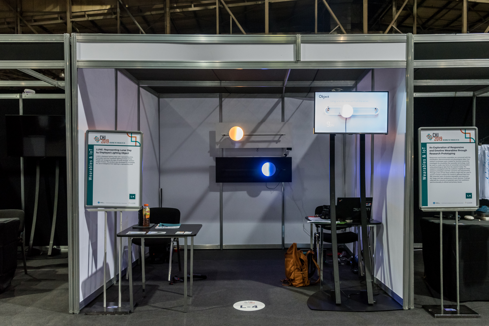
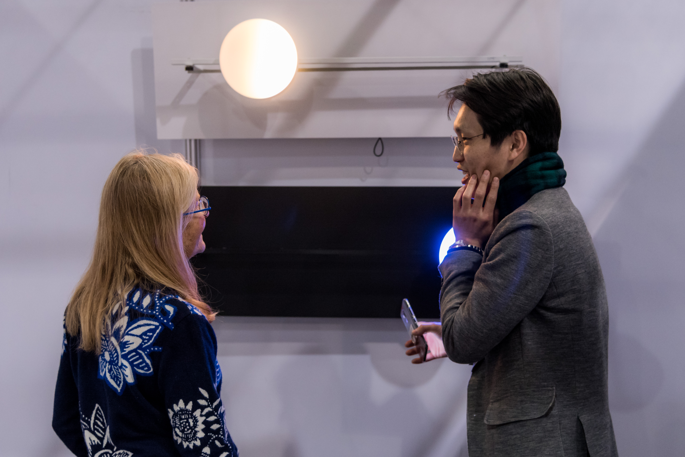
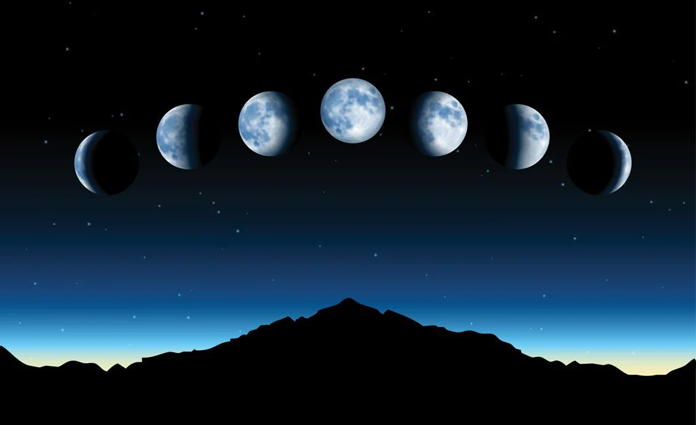
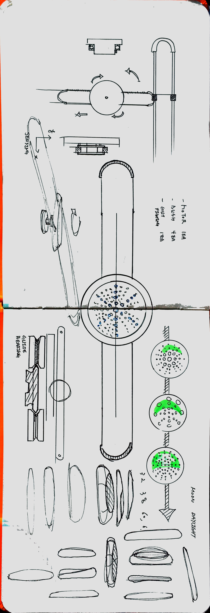
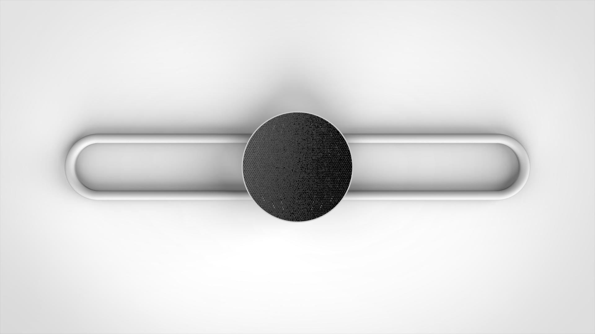
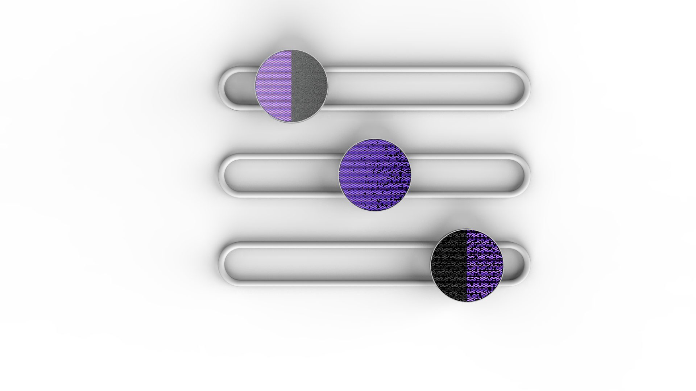
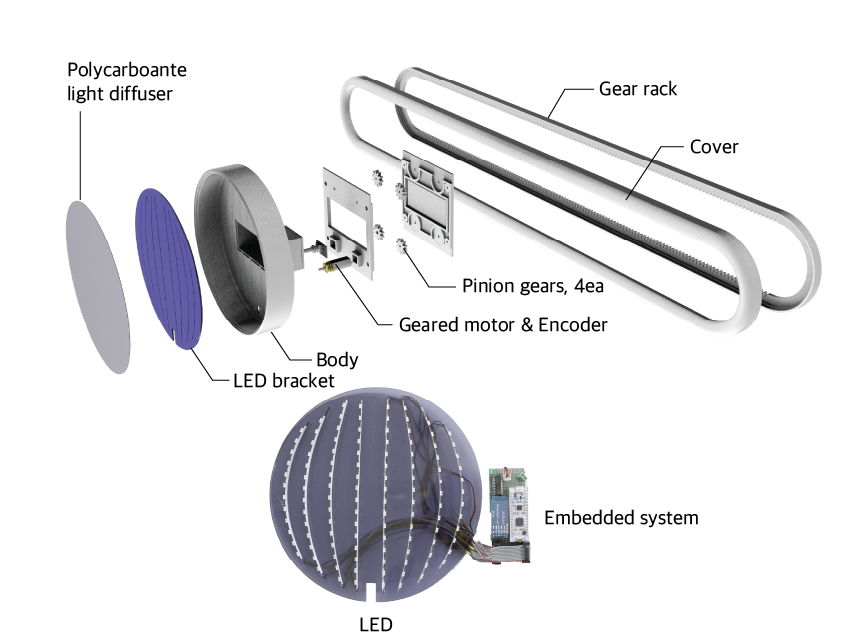
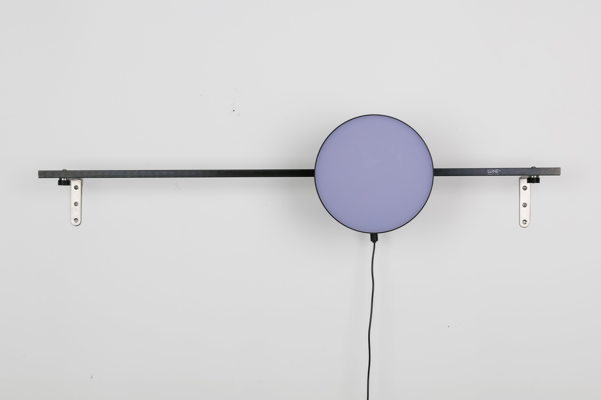
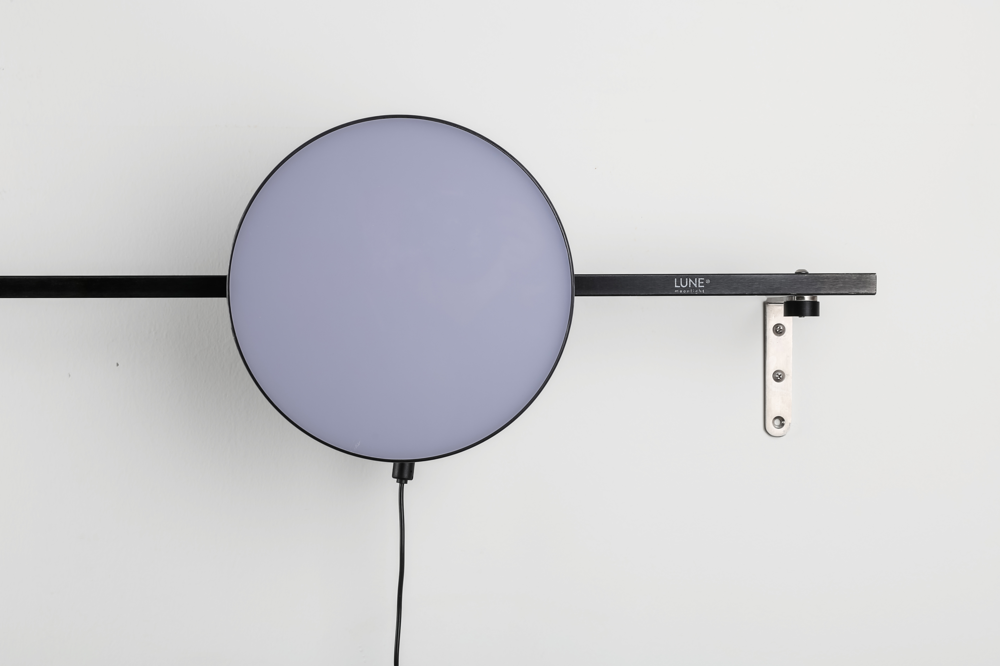

LUNE
- Date
- 2019
- Project Type
- Research through design artifacts
- Description
- Encourage the users exercise by lighting LED interaction
- Responsibility
- 1) Embedded: STM32 MBED, LED Control
- 2) Modeling/Rendering: Solidworks, Keyshot
- 3) Exhibition: CHI2019 - installation
- URL
- CHI 2019 - Paper


Inspiration
Moon phase have played an important role in human-nature interaction throughout history. Moon phase show human-nature interaction is thorugh agriculture. Many traditional farming societies used lunar calendars to determine that best times to plant and harvest crops.

Big Question : How can we use lighting object to effectively convey monthly passage of time?
- Conceptual Sketch
- Rendering
- Prototyping







